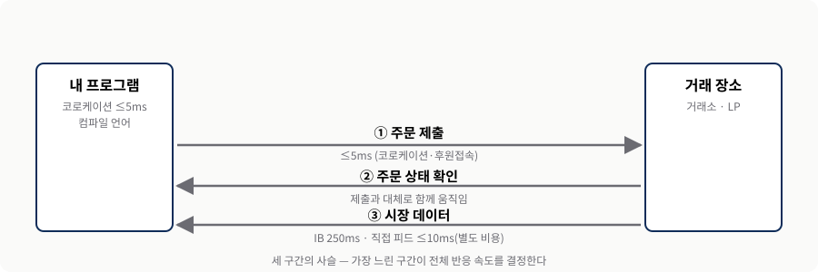
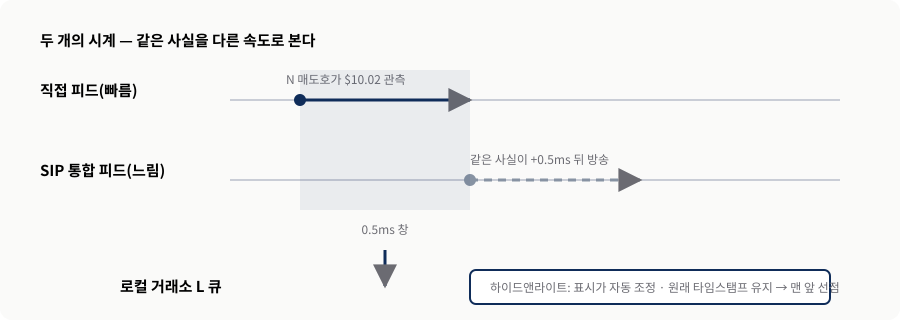
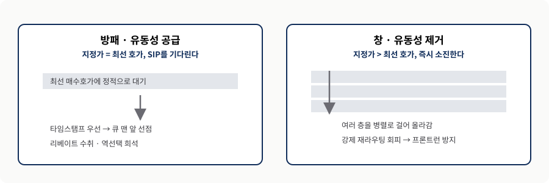
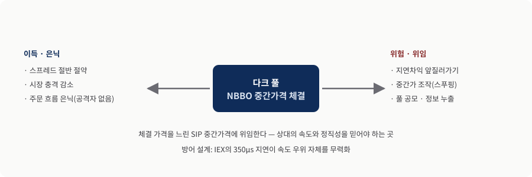
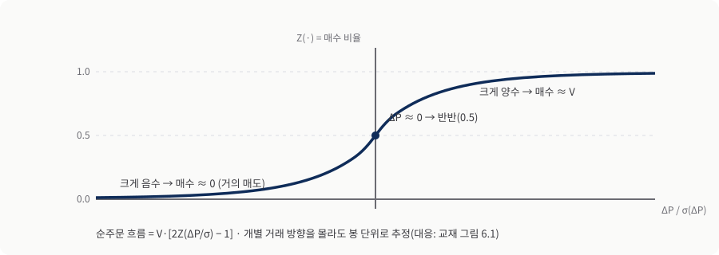
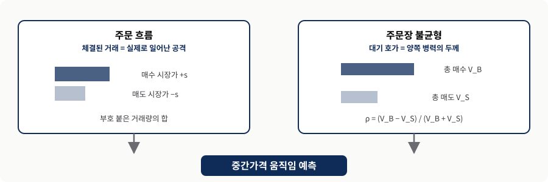
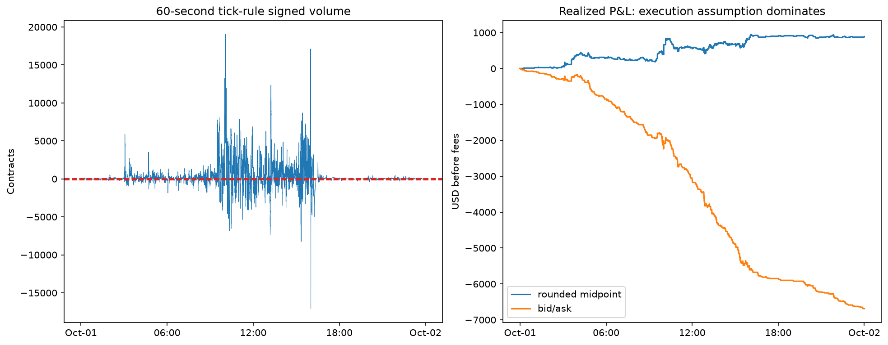
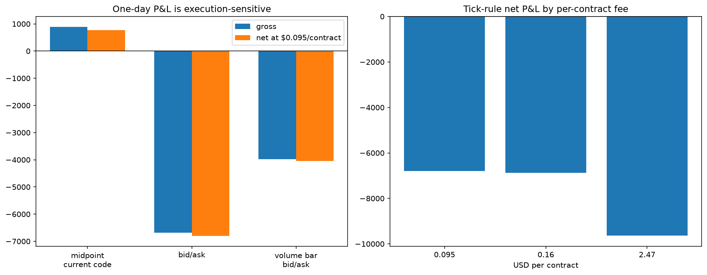

Chapter 6. 일중 거래와 시장 미시구조
지연 · 규칙 · 정보 — 밀리초 단위로 다투는 미시구조의 실전 지침
0. 핵심 요약
제6장은 이 책에서 원문이 가장 긴 장으로, 밀리초 단위로 다투는 일중 거래의 세 가지 싸움을 한자리에 모은다. 첫째는 물리적 층 — 코로케이션과 컴파일 언어로 지연 자체를 줄인다. 둘째는 규칙의 층 — Reg NMS가 짜 놓은 배관 위에서 하이드앤라이트·ISO·다크 풀·IOC를 골라 큐 우선순위를 얻고 역선택을 피한다. 셋째는 정보의 층 — 주문 흐름과 주문장 불균형에서 미래 가격의 실마리를 읽는다. 저자는 이 분야에서 실제로 자금을 운용해 온 헤지펀드 대표로서, 교과서에 잘 나오지 않는 현장의 함정과 요령까지 솔직하게 털어놓는다.
- 문제 — 일중 전략은 왜 매력적이면서(높은 샤프) 동시에 어려운가(용량·거래비용)?
- 메커니즘 — 유동성을 공급하는가 수취하는가에 따라 지연·주문 유형·역선택의 손익이 어떻게 갈리는가?
- 판단 — 신호가 맞는 것과 그 신호로 돈을 버는 것은 왜 다른가(체결 가정)?
| 층 | 핵심 질문 | 주장 | 실무 판단 |
|---|---|---|---|
| 물리 | 지연을 어떻게 줄이나(§6.1) | 지연은 언제나 손해 쪽 | 코로케이션·후원접속·컴파일 언어 |
| 규칙 | 어떤 주문으로 목표를 이루나(§6.2) | 공급이냐 수취냐가 주문 유형을 정함 | 하이드앤라이트·ISO·IOC·다크 풀 |
| 규칙 | 왜 손해 볼 때만 체결되나(§6.3) | 역선택은 대기(수동) 주문만 피해 | 큐 선점 또는 IOC로 대기 회피 |
| 검증 | 왜 일별 데이터로 부족한가(§6.4) | 스프레드½ 가정은 부정확 | Level 2·ITCH·데이터 품질 확인 |
| 정보 | 미래 가격을 어떻게 읽나(§6.5–6.6) | 주문 흐름·불균형이 중간가를 예측 | 적응형(회귀·칼만) 재추정 |
들어가며 — 왜 일중 거래이고, 왜 그렇게 어려운가
- 같은 평균 수익률이면 일중 전략이 대체로 샤프 비율이 높다 — 하루에 더 많은 독립적 베팅을 하기 때문(대수의 법칙).
- 그런데도 모두가 데이 트레이더가 못 되는 이유는 용량과 거래비용이다.
- 거래비용을 이해하려면 시장 미시구조를 알아야 한다.
두 전략의 모든 비용을 뺀 비레버리지 평균 수익률이 같은데 보유 기간이 각각 한 시간과 한 달이라면, 대부분은 일중 전략을 고른다. 하루에 서로 독립적인 베팅을 더 많이 할 수 있어 실현 수익률이 기댓값 주위에 촘촘히 모이고(대수의 법칙), 샤프 비율이 높으면 켈리 공식에 따라 더 높은 레버리지도 걸 수 있기 때문이다. 포지션을 오래 들수록 블랙 스완에 오래 노출된다는 점도 일중 전략에 유리하게 작용한다.
그렇다면 왜 모두가 고빈도 트레이더가 되지 않는가. 첫째는 용량(capacity)이다. AAPL조차 평균 일일 거래대금이 약 40억 달러이고, Nasdaq에서 최우선 호가 규모 평균이 겨우 189주다(교재 서문, Cartea·Jaimungal·Penalva, 2015, Table 4.7 인용). 주문이 이 “최우선 호가(at-the-touch)”보다 크면 이론상 이익을 갉아먹는 큰 시장 충격을 일으킨다. 둘째는 거래비용이다 — 매수·매도 스프레드, 슬리피지, 시장 충격, 역선택, 기회비용의 합이다. 이 비용을 줄이려면 학계가 시장 미시구조라 부르는 것 — 지연 감소, 스마트 라우팅, 시장 분절화, 최적 주문 유형, 다크 풀 — 을 알아야 한다. 논의는 미시구조 문제가 가장 복잡한 미국 주식시장에 초점을 둔다.
이 장을 관통하는 한 가지 질문을 먼저 손에 쥐면 길을 잃지 않는다 — “지금 이야기는 유동성을 공급하는 쪽인가, 수취하는 쪽인가?”
지연시간 단축 — 밀리초를 줄이는 세 가지 싸움
- 지연은 주문 제출·주문 상태·시장 데이터 세 유형이고, 하나의 왕복 사슬을 이룬다.
- 주문의 왕복(①②)은 대체로 함께 움직이지만, 시장 데이터(③)는 브로커 관심 밖이라 따로 챙겨야 한다.
- 지연은 평균회귀에게는 기회비용·역선택으로, 모멘텀에게는 슬리피지로 나타난다.
지연시간(latency)에는 세 유형이 있다. ① 주문 제출(제출→시장 도착), ② 주문 상태(체결·취소·거절이 일어난 순간→알림 수신), ③ 시장 데이터(틱 발생→수신). 저비용 코로케이션(거래소 서버 근처에 내 서버를 둠) 시대에는 개인도 주문 제출 지연을 5ms 이하로 낮출 수 있다. 그러나 시장 데이터는 다르다 — IB는 주식 스냅숏을 250ms 간격으로만 주고, 10ms 미만 저지연 피드는 월 수천 달러를 요구한다. Nasdaq ITCH처럼 거래소 직접 피드는 가격·규모를 넘는 정보를 담지만, 통합 SIP 피드보다 대체로 훨씬 비싸다.
물리적 지연 외에 연산 지연도 있다. 컴파일 언어(C++·C#·Java)는 스크립트 언어(MATLAB·R·Python)보다 최소 10배 빠르므로(Aruoba 외, 2014), 일중 거래에는 컴파일 언어가 원칙이다. 현실적 타협으로 무거운 함수만 Mex·Numba·Cython으로 컴파일하면 C++의 2배 이내까지 따라붙지만, R은 아직 그 수준에 이르지 못한다. 물리적 지연과 연산 지연은 한 사슬이어서, 가장 느린 고리가 전체 속도를 결정한다.

먼저 읽는 법: 세 화살표는 한 왕복의 세 구간이며 방향과 실측 지연을 함께 표시했다. 판단: 어느 한 구간만 빨라도 소용없고 가장 느린 구간이 반응 속도를 정한다. AIML Quant가 교재 §6.1의 지연 3유형과 코로케이션·연산 지연 서술을 하나의 왕복 구조로 재구성.지연이 손익에 미치는 방식은 전략에 따라 갈린다. 평균회귀는 지정가 주문을 걸어 두므로, 몇 밀리초 늦으면 시간 우선 큐에서 밀려 체결 기회를 놓치는 기회비용을 치르고, 나아가 “가격이 곧 불리해질 때에만 체결되는” 역선택을 겪는다. 모멘텀은 시장가로 즉시 진입해야 하므로, 지연은 더 좋은 호가를 남에게 빼앗기는 슬리피지가 된다. 즉 “지연을 줄인다”는 한 문장 뒤에는 내가 공급자인지 수취자인지에 따라 전혀 다른 손익 계산이 숨어 있다.
■ 주문 유형과 라우팅 최적화 — 어떤 주문으로 목표를 이룰 것인가
- 물리적 지연이 하드웨어 경주였다면, 주문 유형은 규칙의 경주다.
- 미국 주식시장은 50+ 시장의 군도이고, Reg NMS 주문 보호 규칙이 이를 하나의 가상 시장으로 묶는다.
- 규칙이 정교할수록 그 이음매를 노리는 특수 주문(하이드앤라이트·ISO)도 정교해진다.
미국 주식시장은 하나가 아니라 50개가 넘는다 — 그중 11개쯤이 거래소, 나머지는 다크 풀이다. 각 시장 센터는 자기 주문장을 유지하지만 완전히 독립적이지 않다. 2007년 무렵 SEC가 제정한 Reg NMS의 주문 보호 규칙(Rule 611)이, 도착한 모든 시장가 주문(또는 시장가로 체결될 지정가)을 가장 좋은 표시 호가를 가진 거래소로 라우팅하게 강제한다. 모든 거래소를 통틀어 가장 좋은 표시 호가가 NBBO이고, 각 거래소의 최우선 호가(BBO)가 “보호”된다. 이 강제 라우팅과 거기 걸리는 시간의 틈새를 특수 주문이 파고든다. 이 절은 미국 주식에 한정되며, 특수 주문은 주로 프라임 브로커 계좌를 가진 트레이더의 관심사다.
| 주문/수식어 | 편 | 핵심 작동 | 노림수 · 한계 |
|---|---|---|---|
| 하이드앤라이트 | 공급 | 표시가를 낮췄다가 자동으로 올림, 원래 타임스탬프 유지 | 큐 맨 앞 선점·리베이트 / 후원 직접접속 필요 |
| ISO(시장 간 스윕) | 공급·수취 | 보호 호가를 짝꿍 주문으로 걷어내고 재라우팅 없이 체결 | 선점 또는 병렬 소진 / 플래시 크래시 유발(71.49%) |
| IOC(즉시체결-취소) | 수취 | 즉시 체결 안 되는 부분은 취소 | 대기 주문을 남기지 않아 역선택 회피 |
| 다크 풀 주문 | 수취 | 호가 미표시, NBBO 중간가에 체결 | 스프레드½·은닉 / 중간가 위임 위험 |
| 일반 시장가 | 수취 | NBBO 거래소로 강제 라우팅 | 단순하나 최선가 아닐 수 있음·자취 노출 |
유동성 공급하기 — 큐의 맨 앞에 서는 특수 주문들
평범한 지정가 주문은 특수 수식어가 붙은 지정가와 우선순위 경쟁에서 밀린다. 하이드앤라이트(hide-and-light)는 거래소가 표시 지정가를 자동으로 낮췄다가(예: $10.01→$10.00) 전국 최우선 매도 호가가 오르는 순간 자동으로 되올리되, 타임스탬프는 원래 주문을 받은 시점으로 유지한다. 그래서 (ISO를 제외한) 다른 모든 주문보다 우선순위가 높아 큐 맨 앞에 선다(교재 표 6.1). 이 “마법”의 정체는 초능력이 아니라 정보 속도의 격차다 — 거래소 직접 피드는 N의 호가 상승을 즉시 보지만 통합 SIP는 약 0.5ms 늦으므로(Ding, 2014), 그 반 밀리초 창에서 이미 벌어진 미래를 먼저 알고 로컬 거래소 맨 앞자리를 선점한다.

먼저 읽는 법: 위 트랙은 빠른 직접 피드, 아래 트랙은 0.5ms 늦는 SIP이며 그 사이 음영이 선점 창이다. 실패 경계: 개인 브로커는 후원 직접접속을 안 주므로 이 반 밀리초를 확보할 수 없다. AIML Quant가 교재 §6.2.1과 표 6.1의 논리를 타임라인으로 재구성.ISO(시장 간 스윕 주문)도 지정가의 일종이지만, NBO와 같은 지정가라도 최우선 매도 거래소로 라우팅될 필요가 없다. 대신 그 호가를 걷어 내는 짝꿍 ISO를 함께 보내면 된다 — 189주라는 얇은 호가가 여기서 오히려 도움이 된다(교재 표 6.2). 개인 투자자도 쓸 수 있는 경우가 있다(IB의 Sweep-to-Fill이 ISO의 한 형태다). 한편 거래소 BATS BZX는 메이커/테이커를 뒤집어 유동성 공급에 수수료를 물리는데, 이는 리베이트가 아니라 큐 우선순위를 위한 것으로 HFT 리베이트 사냥꾼을 앞줄에서 밀어내 평균회귀 트레이더를 돕는다(교재 Box 6.1).
유동성 제거하기 — 정보를 가진 자의 주문
정보 우위 트레이더는 정보가 상하기 전에 빨리 체결되기를 바란다. 시장가 주문은 NBBO로 강제 라우팅되는데, 그 NBBO가 실은 최선이 아닐 수 있다. 해법은 다시 ISO다 — 지정가를 로컬 최선 매도 호가보다 높게 잡아 즉시 체결시키고, 재라우팅 없이 호가장을 “걸어 올라간다”(교재 예제 6.1). 여러 거래소에 동시에 ISO를 쏘면 큰 주문을 순차가 아니라 병렬로 처리해, HFT가 자취를 냄새 맡아 앞질러 가는(front-run) 확률을 낮춘다. 미체결분을 남기지 않으려면 IOC 수식어를 붙인다.

먼저 읽는 법: 왼쪽은 정적으로 대기해 선점하는 방패, 오른쪽은 여러 층을 즉시 소진하는 창이다. 판단: 목적이 곧 지정가 위치를 정한다. AIML Quant가 교재 §6.2.1–6.2.2와 예제 6.1의 대비를 한 도형으로 재구성.다만 ISO는 플래시 크래시의 원인으로 지목된다. 다른 거래소의 더 좋은 호가가 그 거래소의 최우선 호가가 아니면 “보호”되지 않으므로, ISO는 그것을 무시한 채 로컬의 얇은 호가층을 순식간에 뚫고 내려간다. Golub·Keane·Poon(2012)은 세심한 조사 끝에 무려 71.49%가 ISO에 의해 일어난다고 판정했다. 편리한 도구가 시스템 차원에서는 불안정을 낳는 미시구조의 역설이다.
다크 풀로 라우팅하기 — 호가를 감추는 시장
다크 풀(dark pool)은 호가를 표시하지 않는 시장 센터로, 보통 NBBO 중간가격에 체결하고 체결 배정을 비례 배분(pro rata)으로 한다. 정보 우위 트레이더에게 이점은 셋이다 — 스프레드 절반 절약, 호가장 걸어 오르기 회피, 그리고 가장 중요하게 주문 흐름 은닉(다크 풀 체결에는 “공격자”가 없어 주문 흐름을 만들지 않는다). 그러나 대가는 체결 가격을 시장에 위임하는 것이다.

먼저 읽는 법: 왼쪽은 은닉의 이득, 오른쪽은 위임의 위험이다. 해석 경계: 다크 풀은 “빛이 없어 안전한 곳”이 아니라 상대의 속도·정직성을 믿어야 하는 곳이다. AIML Quant가 교재 §6.2.3의 이득·위험 논의를 맞교환 구조로 재구성.위험은 셋이다. 지연시간 차익거래(빠른 자가 느린 SIP 중간가를 미리 알고 왕복), 중간가 조작(작은 미끼 지정가로 중간가를 흔들어 큰 물량을 떠넘기는 불법 스푸핑), 그리고 일부 풀의 공모(대기 주문 정보를 계열 데스크·HFT 파트너에게 넘김). 저자의 처방은 실무적이다 — 문제없는 풀(예전의 IEX)로는 언제든 보내고, 그 밖에는 역선택 정도를 정량 측정해 가장 낮은 풀부터 라우팅하며, IOC로 대기 노출을 줄인다. IEX가 도입한 350μs 지연은 속도로 속도를 이기는 대신 모두를 똑같이 조금 느리게 만들어 속도 우위 자체를 무력화한 공정성 설계다.
역선택 축소 — 왜 내 지정가 주문은 손해 볼 때만 체결되는가
- 역선택: 사면 평균적으로 내려가고 팔면 올라가는 현상 — 상대(공격자)가 더 잘 알기 때문.
- 역선택은 대기 중인 수동 주문(지정가, 다크 풀로 간 시장가)에만 영향을 준다.
- 처방: 큐 맨 앞에 서서 자주 체결되게 하거나(희석), 아예 대기 주문을 남기지 않는다(IOC).
역선택(adverse selection)은 지정가 주문을 “이 가격이면 언제든 반대편이 되겠다”는 약속으로 보면 이해된다. 문제는 그 약속을 걷어 가는 사람이 대개 나보다 잘 아는 사람이라는 점이다. 가격이 곧 떨어질 것을 아는 사람만 내 매수 호가를 치므로, 내 주문은 통계적으로 손해 볼 때만 골라 체결된다 — 보험사가 사고 잘 나는 사람만 골라 받은 꼴이다. “포커 테이블에서 호구가 누군지 모르겠다면 아마 그게 당신”이라는 말처럼, 시장조성·리베이트 전략을 하는 우리가 바로 정보 없는 트레이더다. 역선택은 1초~30분의 짧은 창에서 미체결 주문의 손익과 체결된 주문의 손익의 차이로 상당히 정확히 측정할 수 있다(Saraiya·Mittal, 2009). 이 측정치가 앞서 다크 풀을 고를 때의 “역선택 낮은 곳부터”라는 조언의 근거다.
중요한 경계가 하나 있다 — 역선택은 주문장에 대기 중인 주문에만 영향을 준다. 정보 우위 트레이더가 표시 거래소에 낸 시장가 주문은 언제나 즉시 체결되며, 이익이 안 나도 그것은 상대의 잘못이 아니라 내 예측 모델의 잘못이다. 그래서 지정가 IOC(표시 거래소)나 시장가 IOC(다크 풀)는 주문장에 대기하지 않아 역선택의 대상이 되지 않는다. 유동성을 공급할 수밖에 없다면, 낮은 지연과 하이드앤라이트·ISO로 큐 맨 앞을 확보해 리베이트를 자주 벌어 독성 흐름(toxic flow)의 손실을 상쇄하는 것이 현실적 방어다.
통화시장과 "라스트 룩" — 채워지는 주문만 손해 보는 함정
통화시장은 통합 주문장도, 라우팅도, Reg NMS도 없는 장외(OTC) 시장이다. 여기에는 라스트 룩(last look)이라는 성가신 특성이 있다 — 유동성 공급자(LP)가 우리 시장가 주문을 받고도 수십 밀리초의 시간을 들여 호가 이행 여부를 사후에 고를 수 있다. 여러 시장의 호가가 동시에 맞아 큰 불균형 포지션을 떠안는 것을 피하고, BBO가 크게 바뀌면(정보 우위 상대의 신호) 체결을 거절해 자기 역선택을 피하려는 것이다. 문제는 LP의 이 방어가 매수 측 트레이더에게는 역선택으로 되돌아온다는 점이다.
방향이 주식·선물과 정반대라는 점이 핵심이다. 주식·선물에서 역선택의 희생자는 지정가를 걸어 둔 수동적 트레이더였지만, FX 라스트 룩에서는 시장가를 던진 공격적 트레이더가 희생자가 된다 — 체결 선택권이 반대편으로 넘어가기 때문이다. 저자의 팀은 HotspotFX의 UAT 계좌에서 매우 수익성 좋던 주문 흐름 전략이 실계좌에서 처참히 무너지는 것을 겪었다. 체결된 주문은 손해였고, 거절된 주문들이 알고 보니 이익 났을 것들이었다. 라스트 룩을 꺼 달라 하자 스프레드가 넓어져 역시 수익이 나지 않았다. 결론: 라스트 룩은 FX 모멘텀 전략에만 불리하고 평균회귀·시장조성에는 작용하지 않으며, 어느 주문이 실제로 체결될지 알 수 없어 백테스트·워크포워드의 신뢰도를 근본적으로 떨어뜨린다(대안: LMAX처럼 라스트 룩 없는 센터, 최소 수락률 도입).
■ 일중 전략 백테스팅 — 왜 일별 데이터로는 부족한가
- “스프레드 절반”이라는 뭉뚱그린 비용 가정은 부정확하다 — 유동성은 하루에도 크게 변한다(AAPL 스프레드 6배).
- 시장가 전략엔 최소 Level 2, 지정가 전략엔 ITCH 메시지 스트림이 필요하다.
- 데이터 품질(타임스탬프 해상도·누락·호가 규모·공격자 태그)이 결과의 신뢰도를 좌우한다.
일중 전략은 유동성이 시시각각 변하는 바다에서 수시로 주문을 던진다. 아침과 점심의 스프레드가 다르고(교재 주석 11: AAPL 하루 6배), 내 주문 하나가 얇은 호가를 뚫고 여러 층을 걸어 오를 수 있다. 그래서 “평균 스프레드의 절반”이라는 가정은 정작 비용이 폭증하는 순간을 놓친다. 진짜 백테스트에는 최우선 호가 아래 여러 층인 Level 2가, 지정가 전략에는 주문장을 재구성하게 해 주는 ITCH 메시지(추가·체결·취소)가 필요하다(교재 예제 6.2가 ITCH로 BBO를 구성하는 알고리즘을 보인다). 다만 ITCH에도 수식어는 빠져 있어, 어떤 주문이 하이드앤라이트나 ISO여서 나를 앞지를지는 여전히 알 수 없다.
저자는 벤더 이름을 일일이 거명하며 데이터 결함을 짚는다 — 이는 트집이 아니라 생존 노하우다. 어떤 TAQ는 1분 단위 타임스탬프뿐이라 틱 순서를 알 수 없고, 어떤 데이터는 장마감 경매 가격이나 체결 틱을 빠뜨리며, 호가 규모나 선물 공격자 태그가 없기도 하다. 더 나아가 이런 누락은 장간(interday) 전략의 백테스트마저 오염시킨다 — 통합 일별 데이터의 “시가·종가”는 60여 개 시장 센터 어디서든 나온 수백 주 체결일 수 있어, 주 거래소(primary exchange) 경매 가격과 다르다. 그 차이는 부호가 매일 무작위로 요동치는 백색잡음이라, 평균회귀 전략에서 허구적 초과수익을 만든다(교재 Box 6.2·6.3, 그리고 캘린더 스프레드의 “묵시 호가”).
같은 이름의 데이터라도 시간 해상도·누락·호가 규모·공격자 태그가 제각각이고, 그 작은 차이가 주문 흐름 계산이나 호가장 소진 시뮬레이션을 통째로 무너뜨린다. 데이터 품질을 먼저 검증하지 않은 백테스트는 화려하게 틀린 결론을 낳는다.
주문 흐름 — 부호 붙은 거래량으로 가격을 예측하다
- 주문 흐름(order flow)은 부호 붙은 거래량(매수 시장가 +s, 매도 시장가 −s)이며 미래 가격과 양의 상관을 갖는다.
- 대부분 피드는 매수·매도 방향을 안 주므로, 틱·호가·리-레디·BVC 같은 추정법에 기댄다.
- 데이터 부담이 가벼울수록 추정은 거칠어진다 — 미국 주식은 비표시·다크 풀 체결이 1/3을 넘어 근본적으로 부정확.
시장가 주문은 “스프레드를 손해 보더라도 지금 당장 들어가야겠다”는 급함의 표현이고, 사람이 웃돈을 치르며 서두를 때는 대개 무언가를 안다. 그래서 부호 붙은 시장가 거래량을 합산한 주문 흐름은 “지금 급한 정보를 가진 사람들이 어느 쪽으로 쏠려 있는가”를 읽어 낸다(Lyons, 2001). 이상적으로는 거래소가 각 체결의 방향을 알려 주는 것(공격자 태그·ITCH; 예로 CME MDP의 Tag 5797 AggressorSide)이 가장 정확하다. 그런 직접 피드가 없다면 가격 흔적으로 방향을 역추적한다 — 틱 규칙(직전보다 비싸면 매수), 호가 규칙(중간가 위면 매수), 둘을 섞은 리-레디, 그리고 봉 단위로 배분하는 BVC. 뒤로 갈수록 데이터 부담은 가벼워지지만 추정은 거칠어진다.
| 방법 | 입력 | 발상 | 정확도 ↔ 데이터 부담 |
|---|---|---|---|
| 공격자 태그 · ITCH | 거래소 직접 피드 | 각 체결의 방향을 거래소가 직접 표시 | 가장 정확 / 가장 비쌈 |
| 틱 규칙 | 체결가 시계열 | 직전보다 오르면 매수, 같으면 직전 부호 | 중간 / 가벼움 |
| 호가 규칙 | 체결가 + 중간가 | 중간가보다 위면 매수, 아래면 매도 | 중간 / 가벼움 |
| 리-레디 | 체결가 + 중간가 | 중간가 밖은 호가 규칙, 중간가는 틱 규칙 | 중간+ / 가벼움 |
| BVC | 거래량 봉(ΔP·V) | 가우스 CDF로 거래량을 매수·매도로 배분 | 거칠 수 있음 / 가장 가벼움 |
BVC(대량 거래량 분류)는 개별 거래 방향을 몰라도 거래량 봉(시간이 아니라 거래량이 일정한 봉, 로그 수익률이 더 가우스에 가까움)의 가격 변화와 거래량만으로 주문 흐름을 추정한다(교재 Box 6.4). 고정 거래량 $V$, 봉 간 가격 변화 $\Delta P$, 그 표준편차 $\sigma_{\Delta P}$일 때 “매수” 주문 흐름은 식 (6.1)이다.
$$\text{매수 주문 흐름} = V \cdot Z\!\left(\frac{\Delta P}{\sigma_{\Delta P}}\right) \tag{6.1}$$
여기서 $Z$는 표준정규 누적분포함수(CDF)다. 순주문 흐름은 $V\left[\,2\,Z\!\left(\frac{\Delta P}{\sigma_{\Delta P}}\right) - 1\right]$이며, 가격 변화가 크게 양수면 $V$, 크게 음수면 $-V$에 가까워진다. $Z$는 계단처럼 뚝 끊지 않고 가격 변화의 크기에 따라 매끄럽게 비율을 조절하는 “부드러운 스위치”다.

먼저 읽는 법: 가로축은 정규화한 가격 변화, 세로축은 매수 비율이다. 해석: 개별 거래 방향을 몰라도 봉 단위 ΔP·V만으로 주문 흐름을 추정한다. AIML Quant가 교재 식 (6.1)과 그림 6.1(가우스 CDF)을 발표용으로 재구성.교재 예제 6.3 · 주문 흐름 전략
주문 흐름을 계산하는 두 방법 — 공격자 태그와 BVC — 을 각각 매매 전략으로 만들어 비교한다. 상품은 CME Globex의 E-mini S&P 500 선물(ES) 근월물이며, 예시를 위해 2012-10-01 하루치 데이터만 쓴다(1포인트=$50, 최소 틱 0.25포인트=$12.50). 합산 주문 흐름이 임계값을 넘으면 시장가로 진입하고, 0이 되거나 부호가 뒤집히면 청산한다.
이 리포트가 재현하는 신호 계약(60초 부호 거래량)은 다음과 같다.
$$OF_t = \sum_{t-60\text{s} < i \le t} q_i\, s_i, \qquad s_i \in \{-1, +1\} \tag{재현}$$
공격자 태그 방법의 진입 임계값을 66(그날 주문 흐름의 약 95백분위수)으로 두면 교재는 일일 손익 +$300(거래당 $4, bid-ask 체결 가정)을, 중간가 체결 가정에서는 +$762.50(거래당 $10.17)을 보고한다 — 그러나 후자는 비현실적 가정이다. BVC 방법의 진입/청산 기준은 매수 비율 0.95/0.5이고, 교재 일일 손익은 −$3,975(거래당 −$5.8)로 공격자 태그보다 훨씬 나쁘다. 두 방법의 격차는 “공짜에 가까운 편의(BVC는 틱 피드 불필요)에는 대가가 따른다”는 교훈을 준다. 이 수치들은 저자가 원문에 보고한 값이며, AIML Quant 재현 스냅숏과의 관계는 보충 A에서 분리해 다룬다.
같은 전략이 “스프레드 가로질러 체결”이면 본전 근처, “중간가 체결”이면 크게 이익이다. 신호가 맞는 것과 그 신호로 돈을 버는 것은 별개다 — 예측력이 스프레드를 치르고도 남을 만큼 크지 않으면 실전에서는 돈이 되지 않는다.
개선 방향도 분명하다. 촉발 틱 부재나 유한 거래량 봉으로 인한 지연을 없애고, 무엇보다 주문 흐름 대비 가격 변화의 민감도(회귀 계수)가 시장 상태에 따라 출렁인다는 점을 이용한다 — 유동성이 얇을수록 같은 물량이 가격을 크게 민다. 저자가 제3장에서 다룬 칼만 필터가 여기서 다시 등장한다(관측마다 계수를 부드럽게 갱신). 단순 임계값 규칙을 시장의 변덕에 적응하는 살아 있는 모형으로 끌어올리는 길이다.
주문장 불균형 — 호가만으로 가격을 예측하다
- 주문장 불균형 ρ은 대기 호가의 두께 차이를 정규화한 것으로 중간가 움직임을 예측한다.
- 흔히 BBO 규모만으로 충분하며, ORCL에서 최대 200초까지 상관이 지속된다.
- 매수 불균형이 매수 시장가를 끌어들이는 자기 강화 고리가 있다.
주문 흐름이 체결된 거래의 함수였다면, 주문장 불균형(order book imbalance)은 아직 체결되지 않은 대기 호가의 함수다. 총 매수 호가 규모 $V_B$, 총 매도 호가 규모 $V_S$일 때 식 (6.2)로 정의된다.
$$\rho = \frac{V_B - V_S}{V_B + V_S} \tag{6.2}$$
$\rho$는 −1에서 +1 사이로, 매수가 우세하면 양수다. 일부 연구자는 나머지 주문장을 무시하고 BBO 규모만 써도 충분하다고 본다. Cartea·Jaimungal·Penalva(2015)는 ORCL에서 주문장 불균형과 미래 가격 변화 사이에 최대 200초 지속되는 유의미한 상관(1초 상관은 0.5까지)을 발견했다. 흥미롭게도 매수 불균형은 매수 시장가 주문을 끌어들이므로($\rho$가 크게 양수일 때 매도 지정가를 위로 조정할 또 하나의 이유), 지표가 스스로를 강화한다.

먼저 읽는 법: 왼쪽은 체결(사후), 오른쪽은 대기 호가(사전)이며 둘 다 중간가 예측으로 수렴한다. 한계: 두 지표 모두 상관이 시간·종목에 따라 변한다. AIML Quant가 교재 §6.5–6.6의 두 지표를 비교 도형으로 재구성.두 지표의 공통 한계는 상관이 시간과 종목에 따라 변한다는 것이다. 그래서 앞 절에서 권한 대로 선형회귀나 칼만 필터로 민감도를 끊임없이 재추정하는 적응형 접근이 실전에서는 사실상 필수다.
요약 — 일중 거래의 매력과 대가
- 일중 거래는 드로다운이 짧아 검증 시간 틀도 짧지만, 이익이 작아 거래비용의 영향이 크다.
- 이 장은 물리·규칙·정보의 세 층으로 읽을 수 있다.
- “알파는 덧없다” — 미시구조의 우위는 규제·기술·거래소 변화에 순식간에 사라질 수 있다.
일중 거래는 매력적이다 — 드로다운 기간이 짧아 전략을 검증·기각하는 시간 틀도 짧다. 그러나 각 거래의 이익이 작아 거래비용의 영향이 장기 거래보다 크다(리베이트 전략이면 이익은 센트가 아니라 밀(mil) 단위다). 이 장이 논의한 비용 절감은 세 층으로 정리된다 — 물리(신호·주문·시장 데이터의 지연 감소), 규칙(특수 주문으로 라우팅 시간 단축·큐 우선순위 확보, 다크 풀로 스프레드·정보 은닉, 주문 유형·풀 선택으로 역선택 회피), 정보(주문 흐름·주문장 불균형으로 중간가 예측).
그러나 저자의 마지막 문장은 뼈아프다 — 장간 전략은 수년 지속되는 “요인”에 기댈 수 있지만, 일중 전략은 규제 변화·HFT 부상·새 기술과 거래소에 반응해 빠르게 바뀌는 미시구조에 예민하게 의존한다. 알파는 결국 덧없다. 그러니 일중 트레이더의 진짜 경쟁력은 특정 기법 자체가 아니라, 바뀌는 시장 구조를 끊임없이 다시 읽고 적응하는 태도에 있다.
보충 A. 재현 감사 — 교재 보고값과 재현 스냅숏의 분리
- 공식 ZIP 7개 멤버를 SHA-256으로 고정하고 21/21 자동 검증을 통과했다.
- 교재가 보고한 값과 AIML Quant 재현 스냅숏은 서로 다른 대상이므로 섞지 않는다.
- 단 하루의 ES 데이터이므로 전략 수익성이나 out-of-sample 성과를 주장하지 않는다.
이 절은 교재 범위를 넘는 AIML Quant의 재현 감사다(원자료: src/reports/metrics.json). 공식 아카이브(Chap6 Intraday Trading.zip, SHA-256 e8bceb…c9e3e)의 7개 멤버 = MATLAB 4 + 연구 데이터 3을 고정했다. 핵심 유의점은 귀속 분리다 — 교재 예제 6.3이 보고한 값은 공격자 태그 전략의 것이지만, 공식 번들에는 Algoseek 공격자 태그 입력이 없다. 그래서 재현은 같은 데이터의 틱 규칙 경로로 대체(substituted)했고, 그 결과 숫자는 교재 예제 6.3의 수치와 직접 비교할 수 없다.
| 항목 | 체결 가정 | 총손익 | 거래 수 · 성격 |
|---|---|---|---|
| 교재 예제 6.3 · 공격자 태그 | bid-ask | +$300 (거래당 $4) | 75건 · 저자 보고값 |
| 교재 예제 6.3 · 공격자 태그 | 중간가 | +$762.50 (거래당 $10.17) | 비현실적 상한 |
| 교재 예제 6.3 · BVC | bid-ask | −$3,975 (거래당 −$5.8) | 저자 보고값 |
| 재현 · 틱 규칙(공격자 대체) | bid-ask | −$6,687.5 (net −$6,800.55) | 1,190건 · 원본 출력 정확 일치 |
| 재현 · 틱 규칙(공격자 대체) | rounded 중간가 | +$887.5 (net +$774.45) | 1,190건 · 분기 불변 |
| 재현 · volumeBar BVC | bid-ask | −$3,975 (net −$4,040.36) | 688건 · source-semantic |
재현 틱 규칙의 bid-ask 총손익 −$6,687.5는 원본 MATLAB 출력과 절대오차 0에서 1e-7 이내로 일치한다(21/21 검증 통과). 같은 신호인데 중간가 가정이면 +$887.5로 부호가 뒤집힌다 — 실행 가정 하나가 신호 효과보다 크다는 가장 직접적 경고다. 수수료 민감도(그림 8)는 최소 $0.095에서 IB의 $2.47까지 손실을 단조 증가시킨다. 주문장 재구성(Coinsetter 246,060 이벤트→233,072 봉)의 median spread −250.83은 정상 스프레드가 아니라 원본도 assertion을 주석 처리한 crossed 상태가 많다는 데이터 품질 경고로 남긴다.

AIML Quant 재현 산출물. 단일 거래일(2012-10-01) ES 예시로, out-of-sample 성과나 연율 지표를 주장하지 않는다. 공격자 태그 입력 부재로 틱 규칙을 대체 사용.
AIML Quant 재현 산출물. bid-ask 경로는 스프레드를 체결가에 이미 포함하고 수수료는 별도 차감한다. 시장 충격·큐 위치·지연은 모델링하지 않는다.핵심 용어
| 용어 | 이 장에서의 의미 |
|---|---|
| 지연시간 (latency) | 주문 제출·상태 수신·시장 데이터가 오가는 시간, 짧을수록 유리. |
| 코로케이션 (colocation) | 거래소 서버 옆에 내 서버를 두어 지연을 줄이는 것. |
| 시장 미시구조 | 호가와 체결이 실제로 형성되는 세밀한 배관·규칙. |
| NBBO | 모든 거래소를 통틀어 가장 좋은 매수·매도 호가. |
| Reg NMS / 주문 보호 규칙 | 시장가를 최선 표시 호가 거래소로 라우팅하게 강제하는 규제. |
| SIP | 여러 거래소 호가·체결을 합쳐 배포하는 통합 피드(직접 피드보다 약 0.5ms 느림). |
| 하이드앤라이트 | 표시가를 낮췄다가 자동으로 올려 큐 앞자리를 지키는 지정가 주문. |
| ISO (시장 간 스윕) | 라우팅 없이 로컬 거래소에서 즉시 체결·호가장 소진하는 지정가 주문. |
| IOC (즉시체결-취소) | 즉시 체결 안 되는 부분은 취소해 대기 주문으로 남기지 않는 수식어. |
| 다크 풀 | 호가를 표시하지 않고 대개 NBBO 중간가격에 체결하는 시장 센터. |
| 중간가격 (midprice) | 최우선 매수·매도 호가의 평균값. |
| 비례 배분 (pro rata) | 시간 우선이 아니라 대기 주문 규모에 비례해 체결을 배분. |
| 역선택 (adverse selection) | 내 대기 주문이 손해 보는 방향으로만 체결되는 현상. |
| 독성 흐름 (toxic flow) | 정보 우위 트레이더의 시장가가 만드는, 시장조성자에게 손해인 주문 흐름. |
| 라스트 룩 (last look) | FX에서 LP가 내 시장가를 받고도 호가 이행을 거절할 수 있는 특성. |
| 주문 흐름 (order flow) | 부호 붙은 거래량(매수 시장가 +, 매도 시장가 −), 미래 가격과 양의 상관. |
| 공격자 태그 (aggressor tag) | 각 체결이 매수·매도 중 어느 시장가 때문인지 알려 주는 태그. |
| BVC (대량 거래량 분류) | 틱 대신 거래량 봉의 가격 변화·거래량으로 주문 흐름을 추정하는 법. |
| 거래량 봉 (volume bar) | 시간이 아니라 거래량이 일정하도록 묶은 봉, 로그 수익률이 더 가우스에 가까움. |
| 주문장 불균형 | (매수 규모−매도 규모)/(합)으로, 중간가격 움직임을 예측. |
| ITCH | 주문 추가·체결·취소를 담아 주문장을 재구성하게 해 주는 거래소 직접 메시지. |
| TAQ | SIP에 보고된 통합 체결·호가 데이터. |
| 주 거래소 (primary exchange) | 주식이 상장된 거래소, MOO/MOC 경매가 유의미한 거래량을 갖는 곳. |
| 플래시 크래시 | 1.5초 안에 급락(급등)하는 순간적 붕괴, 상당수가 ISO 때문. |
| 스푸핑 (spoofing) | 취소할 작은 주문으로 중간가를 조작해 큰 주문을 유리하게 체결하는 불법 행위. |
| 묵시 호가 (implied quotes) | 캘린더 스프레드 지정가가 단일물 계약에 만들어 내는 거래 가능한 호가. |
참고 자료와 도형 출처
- [1]Ernest P. Chan, Machine Trading (Wiley, 2017), Chapter 6 “Intraday Trading and Market Microstructure”. 본 리포트의 원자료는 참가자 저장소의 해설판(
materials/quant/archive/machine-trading/chapter_6_…_ko_explained.md)이다. - [2]재현 산출물·수치:
materials/…/chapter_6_…/src/reports/metrics.json(공식 ZIP SHA-256e8bceb…c9e3e, 21/21 검증). 그림 7·8은 이 재현의 출력이다. - [3]본문 인용 문헌(교재 경유): Cartea·Jaimungal·Penalva (2015); Golub·Keane·Poon (2012); Saraiya·Mittal (2009); Easley·López de Prado·O’Hara (2012, 2015); Ding (2014); Lyons (2001). 그림 1–6은 교재 논리를 AIML Quant가 재구성한 발표용 도해다.